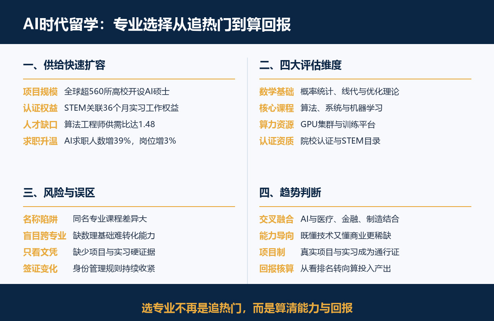

人工智能正在重塑留学选择的逻辑。公开资料显示，全球已有超过 560 所高校开设人工智能相关硕士项目，STEM 认证项目占比持续攀升——这一资质直接关联美国、加拿大、澳大利亚等国 36 个月的实习与工作权益。与此同时，国内 AI 领域算法工程师供需比达到 1.48，2025 年前三季度 AI 求职人数同比增长 39%，而岗位供给仅增长 3%。一边是项目供给快速扩容，一边是就业市场的结构性缺口，留学家庭面对的问题已经从“去哪里、读什么”，变成“这个专业的课程、认证和回报能不能兑现”。

一、事实层面：AI 硕士项目从独立专业走向交叉融合
人工智能学科正在经历三个阶段的变化：从计算机科学下的研究方向，到独立设立的硕士与博士专业，再到与商科、医疗、工程、金融等领域深度融合的交叉学科。2026 年“AI 加速扩容”成为留学市场最显著的专业赛道特征。
美国高校的布局最密集。宾夕法尼亚大学于 2025 年扩招 MSE in AI，隶属工程与应用科学学院，强调硬件协同与系统级 AI 部署能力；哥伦比亚大学推出藤校首个独立 MSAI 学位，并开放纯在线学习路径，课程嵌入媒体数据分析与 AI 传播模块。卡内基梅隆大学的 MS in AI 与 MS in Robotics 双轨并行，依托年预算超过 6500 万美元的机器人研究所；密歇根大学安娜堡分校将于 2027 年秋季启动全新的 AI Engineering MSE 项目，聚焦汽车智能制造与 AI 优化算法；西北大学设立 AI 及机器人硕士，对具备光电或自动化背景的申请者提供 GRE 豁免政策。
英联邦体系更侧重治理与跨学科。伦敦政治经济学院与伦敦国王学院侧重 AI 治理与社会影响，课程融合哲学、法律与机器学习；爱丁堡大学信息学院以知识表示与逻辑推理见长；牛津大学通过跨学科“人工智能与数据科学”双学位强化伦理框架与工程实践的平衡。悉尼大学、墨尔本大学、新南威尔士大学与澳大利亚国立大学均开设独立 AI 本科与硕士课程。
二、评估维度：不能只看专业名字
评估一个 AI 项目，至少要看四个维度。一是数学课程强度，包括概率统计、线性代数与优化理论；二是核心计算机课程覆盖度，包括算法、系统与机器学习基础；三是实验室与算力资源可及性，包括 GPU 集群与大模型训练平台；四是项目是否明确归属 STEM 目录，这直接关系实习工作时长与后续身份路径。
同名专业的课程差异往往很大。同样叫 Business Analytics，有的偏统计建模、机器学习与编程，有的偏商业决策与管理应用；同样叫 Artificial Intelligence，有的具备扎实的算法、数学与计算机课程，有的更偏 AI 工具应用。专业名称相同，不代表毕业能力相同。
认证资质是另一条底线。美国高校认证分区域认证与专业认证，区域认证是基本门槛，可通过美国教育部相关数据库核实；无区域认证的学校，学历在国内无法通过正规渠道完成认证。选择在线项目时，还要核实学校资质、学科实力、就业数据、课程语言与同学网络质量，警惕“100% 录取”之类的营销话术。
三、风险与误区：盲目跨专业与“文凭等于能力”的错觉
第一个误区是盲目追热门。一个英语专业学生看到 AI 热门就直接申请人工智能硕士，未必是好选择。AI 背后需要数学、编程、统计学与计算机基础，缺少这些基础，即便拿到录取，也可能面临学习困难与就业竞争力不足。更现实的路径，是选择数字营销、商业分析、信息系统、人机交互等与原专业有衔接的交叉方向。
第二个误区是把留学等同于一张海外文凭。真正有价值的留学经历，应让学生在毕业时拥有几项可展示的能力：能够使用 AI 与数据工具解决实际问题，有真实项目、研究或实习经历，能够用英语进行专业沟通，能够独立分析问题并提出方案，能够与不同背景的人协作。
第三个误区是忽略规则变化。自 2026 年 9 月 15 日起，美国 F/J 签证实施“固定期限＋持续身份管理”新规，学生需严格匹配学位路径、专业属性与预计就读年限，任何偏离都可能影响身份延续。在线学习也有不能回避的挑战：自律要求高、缺少沉浸式语言环境、时差影响直播课参与。
百度世界 2026 上提出的一组概念，对专业选择同样有启发：一类是能够创造技术、产品和方案的创造者，一类是能够理解市场、连接资源、建立信任的连接者。未来既懂技术又懂商业的复合型人才，长期竞争力尤其值得关注。
四、趋势预判：从“追热门”到“算回报”
留学投资的回报，至少要考虑四个因素：学费与生活成本，学制长短与毕业时间，毕业后进入什么行业、从事什么岗位，以及学历在目标就业市场的认可度与后续发展空间。围绕这四个因素，可以做出几条判断。
其一，交叉方向比纯 AI 更适合多数申请者。AI 与精准医疗、量化金融、智能制造等结合的项目，既保留了行业壁垒，又降低了一味追逐底层算法的风险，也更符合复合型人才的成长路径。
其二，项目制学习成为硬通货。随着企业更看重可验证的能力，真实项目、研究与实习经历的权重会继续上升。选择项目时，应关注它是否提供产业合作、实验室轮转或可展示的成果。
其三，认证与合规成为筛选底线。院校区域认证、STEM 目录归属、国内留服认证与涉外监管信息网可查，都会从“加分项”变成“必选项”。对于中外合作办学与免联考国际硕士项目，同样要核实教育部备案与认证路径。
其四，留学服务从“申请”转向“规划”。单纯的选校与材料准备价值下降，课程匹配度、算力与实验室资源、就业数据、签证路径和回国认证，会成为咨询服务的核心内容。
其五，国内外学历体系互联加快。更多高校与海外院校推出联合培养、双学位和线上硕士项目，学生可以在不同阶段组合学习资源。但项目越多，越需要把认证与质量放在首位。
结语
AI 时代的留学，不是要不要追 AI 的问题，而是如何把个人基础、专业课程、认证资质和就业回报串成一条可验证的链条。只盯排名和热门名称，很容易在两三年后发现自己拿到的是一个难以兑现的选择。
对研究院服务的国际教育合作项目而言，真正的价值不在于把学生送出去，而在于帮助学生选对方向、读对课程，拿到可认证、可就业、可发展的真本事。这也是国际教育板块下一阶段最需要沉淀的能力。
本文所引公开数据与项目信息来自公开资料，相关分析为国际教育趋势研判，不构成报考、留学或投资建议；具体项目、课程与签证要求以官方最新发布为准。